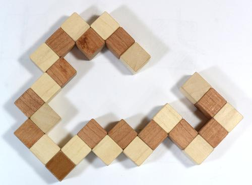

Oldjuk meg a jól ismert “kígyó-kocka” feladványt:

Az egyes kis szakaszok fixek, de a derékszögű fordulásoknál egymáson elforgathatóak; a feladat, hogy kirakjunk belőle egy 3x3-as kockát.
Szokás szerint azzal kezdjük, hogy felvesszük az adatokat. Ez a készítendő kocka mérete, és a kígyót alkotó szakaszok hosszai:
méret(3).
kígyó([3,2,2,3,2,3,2,2,3,3,2,2,2,3,3,3,3]).A teljes kockán belül minden pozíciót 3 koordinátával tudunk jellemezni:
pozíció(p(X, Y, Z)) :- méret(N),
között(1, N, X), között(1, N, Y), között(1, N, Z).Tehát a jelenlegi 3x3-as kocka esetében minden koordináta 1 és 3 között változhat.
A között szabály feladatként volt bevezetve, így definiálhatjuk:
között(N, M, N) :- N =< M.
között(N, M, X) :- N < M, N1 is N + 1, között(N1, M, X).Itt arra érdemes figyelni, hogy N > M esetén ez nem kielégíthető.
Hatféle irányról beszélhetünk, a három tengely irányában pozitív és negatív irányban. Ezeket leírhatjuk olyan módon, mint pl. i(x, -1) vagy i(z, 1). Az összes irányt tehát így fogalmazhatjuk meg:
irány(i(T, I)) :- tartalmaz(T, [x, y, z]), tartalmaz(I, [-1, 1]).A T itt az egyik tengely, az I pedig 1 vagy -1, ami a pozitív ill. negatív irányt jelöli.
Két egymás után következő szakasz mindig merőleges egymásra, tehát a tengelyük nem lehet azonos:
köv_irány(i(T, _), i(T1, I)) :- irány(i(T1, I)), T \= T1.Hogyan változik egy pozíció, ha ellépünk egy adott irányban? A lépés(P1, I, P2) akkor lesz igaz, amikor a P1-ből I irányba ellépve a P2-be jutunk:
lépés(p(X, Y, Z), i(x, I), p(X1, Y, Z)) :- X1 is X + I.
lépés(p(X, Y, Z), i(y, I), p(X, Y1, Z)) :- Y1 is Y + I.
lépés(p(X, Y, Z), i(z, I), p(X, Y, Z1)) :- Z1 is Z + I.(Ezért volt jó a pozitív/negatív irányt 1-el és -1-el jelölni.)
Próbáljuk meg felírni a megoldást! Legyen a szabályunk megoldás(K, PL, I, X); itt K a kígyó hátralevő része, PL a már kitöltött pozíciók listája (az elején a kígyó feje, amit épp vizsgálunk), az I az aktuális irány, és X az irányváltoztatások listája. A reláció akkor teljesül, ha a PL pozíció-lista első elemétől I irányban indulva le tudjuk rakni a K listában levő szakaszokat az X listában levő irányokat követve úgy, hogy mindig a kockán belül maradunk, és nem megyünk bele a PL egyik elemébe sem. Ekkor a
?- kígyó(K), pozíció(P), irány(I),
megoldás(K, [P], I, X).kérdésre P adja a kezdő pozíciót, I a kezdő irányt, és X az irányváltoztatásokat.
Ha a kígyónak már csak 1 szakasza van hátra, akkor csak azt kell megnézni, hogy azt le tudjuk-e tenni:
megoldás([N], PL, I, [I]) :- ellenőriz(PL, I, N, _).Az ellenőriz(PL, I, N, PL1) akkor lesz igaz, ha a PL elején levő pozícióról az I irányban le tudunk helyezni egy N hosszú szakaszt anélkül, hogy kimennénk a kockából vagy érintenénk egy PL-ben levő pozíciót, és az így bővült pozíció-lista a PL1.
Ezt szavakban elmondani bonyolultabb, mint programban:
ellenőriz(PL, _, 1, PL).
ellenőriz([P|M], I, N, PL1) :-
N > 1, lépés(P, I, P1),
pozíció(P1), nemtartalmaz(P1, M), N1 is N - 1,
ellenőriz([P1, P|M], I, N1, PL1).Ha a szakasz 1 kockából áll, akkor nincs további teendőnk, és PL1 = PL. Egyébként teszünk a megadott irányban egy lépést, megnézzük, hogy érvényes pozíció-e, nem szerepel-e az eddigi pozíciók listájában, és ha ez mind jó, akkor jöhet a többi lépés (aminél a PL-et kiegészítjük az új P1 pozícióval, és a készítendő szakasz hosszát csökkentjük 1-el).
Ha a kígyó több szakaszból áll, akkor először ellépünk az első szakasz hosszával az aktuális irányban, utána új irányt választunk, és rekurzióval elvégezzük a maradékot:
megoldás([N|M], PL, I, [I|X]) :-
ellenőriz(PL, I, N, PL1), köv_irány(I, I1),
megoldás(M, PL1, I1, X).Ezzel a fent ismertetett módon megkapjuk a megoldást, de kicsit nehezen olvasható alakban. Fordítsuk le magyarra az irányokat!
fordít([], []).
fordít([i(T, I)|M], [F|FM]) :-
( T = x, (I = 1, F = jobbra; I = -1, F = balra)
; T = y, (I = 1, F = fel; I = -1, F = le)
; T = z, (I = 1, F = előre; I = -1, F = hátra) ),
fordít(M, FM).A fordít szabály első argumentuma irányok egy listája, a második pedig az ennek megfelelő fordítások listája. Érdemes megfigyelni a zárójelezés és a logikai vagy jelentésű pontosvesszők használatát.
Végül akkor tegyük az egész megoldót egy szabályba!
kígyó_kocka(K, P, FI, FX) :-
kígyó(K), pozíció(P), irány(I),
megoldás(K, [P], I, X), fordít([I|X], [FI|FX]).Ha kipróbáljuk:
?- kígyó_kocka(K, P, FI, FX).
FI = jobbra,
FX = [jobbra, fel, balra, előre, fel, hátra, jobbra, előre,
le, balra, fel, hátra, fel, előre, le, jobbra, fel],
K = [3, 2, 2, 3, 2, 3, 2, 2, 3, 3, 2, 2, 2, 3, 3, 3, 3],
P = p(1, 1, 1)… az eredmény már sokkal könnyebben értelmezhető.
A megoldó elég általános ahhoz, hogy más változatokra is használható legyen, pl. a “mean green” feladványra, ha lecseréljük a kígyó definícióját:
kígyó([3,3,2,3,2,3,2,2,2,3,3,3,2,3,3,3]).Egy másik variáns a “king” feladvány, aminél 4x4-es kockát kell építeni:
méret(4).
kígyó([3,2,3,2,2,4,2,3,2,3,2,3,2,2,2,2,
2,2,2,2,3,3,2,2,2,2,2,3,4,2,2,2,
4,2,3,2,2,2,2,2,2,2,2,2,4,2]).Ennek sokkal több lehetőséget kell megvizsgálnia, ezért kell neki pár perc - az SWI Prolog netes verziója nem biztos, hogy engedi, de a letölthető verzióban ki lehet próbálni.
Megfordíthatjuk a kérdést: hogyan lehet egy számsorozatot készíteni, ami olyan kígyót határoz meg, amiből kocka készíthető? Ehhez a kígyó-nak egy új definíciójára lesz szükségünk:
kígyó(K) :-
méret(N), N3 is N^3, N1 is N3 // (N - 1),
között(N1, N3, H), hossz(K, H),
kígyó(K, N3).A teljes kígyó hossza a méret köbe (N3). A kígyót alkotó szakaszok száma (a kígyónak, mint szakasz-listának a hossza, H) tehát N3/(N-1) és N3 között lesz, hiszen minden szakasz legfeljebb N-1 új pozíciót fedhet le. Az egyes szakaszokat ezután a kígyó/2 segítségével készítjük el:
kígyó([], 1).
kígyó([Sz|K], M) :-
M > 1, méret(N), között(2, N, Sz),
M1 is M - Sz + 1, kígyó(K, M1).Ha még M hosszú kígyót kell csinálni, akkor választunk egy számot 2 és N között (egy szakasz hossza csak ilyen lehet), ez lesz a mostani szakaszunk hossza, és a maradék szakaszokkal pedig egy ennyivel rövdebb kígyót csinálunk (pontosabban eggyel hosszabbat, mert egy szakasz utolsó eleme egyben a következő első eleme). Amikor már csak 1 hosszú kígyót kell csinálni, készen vagyunk.
Ezzel a definícióval azt kapjuk, hogy
?- kígyó_kocka(K, P, FI, FX).
K = [2, 3, 3, 2, 3, 3, 3, 3, 3, 3, 3, 2, 3, 2, 3],
P = p(1, 2, 2),
FI = le,
FX = [le, jobbra, fel, hátra, le, balra, fel, előre,
le, jobbra, fel, balra, hátra, le, előre] (Ez jó sokáig tart.) Mivel a szakaszok számával alulról felfele próbálkozunk, az első megoldás a legkevesebb szakaszból álló kígyó (15 db), amit 3x3-as kockába lehet rendezni. Ha a fenti definícióban a között(N1, N3, H) helyett H = 15-öt írunk (tehát ha lerögzítjük a szegmensek számát), akkor egész gyorsan lefut, még a netes verzióban is megy.
A futási idő mindig egy kompromisszum: (aránylag) keveset kellett gondolkodnunk ahhoz, hogy megírjuk ezt a programot. Hatékonyabb programot gyakran nehezebb írni, viszont néha elég a lassabb is, pl. olyan feladatoknál, mint a kígyó-generálás, amikor a lényeg csak az, hogy találjunk egy megoldást (még ha akár napokig is kell a gépnek számolnia). Azért persze törekedjünk a hatékonyságra :)
Mivel ez már egy elég összetett program volt, itt van egyben az egész:
tartalmaz(X, [X|_]).
tartalmaz(X, [_|M]) :- tartalmaz(X, M).
nemtartalmaz(_, []).
nemtartalmaz(X, [Y|M]) :- X \= Y, nemtartalmaz(X, M).
hossz([], 0).
hossz([_|M], N) :- hossz(M, N1), N is 1 + N1.
között(N, M, N) :- N =< M.
között(N, M, X) :- N < M, N1 is N + 1, között(N1, M, X).
% Standard
méret(3).
kígyó([3,2,2,3,2,3,2,2,3,3,2,2,2,3,3,3,3]).
% Mean green
% méret(3).
% kígyó([3,3,2,3,2,3,2,2,2,3,3,3,2,3,3,3]).
% King
% méret(4).
% kígyó([3,2,3,2,2,4,2,3,2,3,2,3,2,2,2,2,
% 2,2,2,2,3,3,2,2,2,2,2,3,4,2,2,2,
% 4,2,3,2,2,2,2,2,2,2,2,2,4,2]).
% Generáló
% méret(3).
% kígyó(K) :-
% méret(N), N3 is N^3, N1 is N3 // (N - 1),
% között(N1, N3, H), hossz(K, H),
% kígyó(K, N3).
% kígyó([], 1).
% kígyó([Sz|K], M) :-
% M > 1, méret(N), között(2, N, Sz),
% M1 is M - Sz + 1, kígyó(K, M1).
pozíció(p(X, Y, Z)) :- méret(N),
között(1, N, X), között(1, N, Y), között(1, N, Z).
irány(i(T, I)) :- tartalmaz(T, [x, y, z]), tartalmaz(I, [-1, 1]).
köv_irány(i(T, _), i(T1, I)) :- irány(i(T1, I)), T \= T1.
lépés(p(X, Y, Z), i(x, I), p(X1, Y, Z)) :- X1 is X + I.
lépés(p(X, Y, Z), i(y, I), p(X, Y1, Z)) :- Y1 is Y + I.
lépés(p(X, Y, Z), i(z, I), p(X, Y, Z1)) :- Z1 is Z + I.
ellenőriz(PL, _, 1, PL).
ellenőriz([P|M], I, N, PL1) :-
N > 1, lépés(P, I, P1),
pozíció(P1), nemtartalmaz(P1, M), N1 is N - 1,
ellenőriz([P1, P|M], I, N1, PL1).
megoldás([N], PL, I, [I]) :- ellenőriz(PL, I, N, _).
megoldás([N|M], PL, I, [I|X]) :-
ellenőriz(PL, I, N, PL1), köv_irány(I, I1),
megoldás(M, PL1, I1, X).
fordít([], []).
fordít([i(T, I)|M], [F|FM]) :-
( T = x, (I = 1, F = jobbra; I = -1, F = balra)
; T = y, (I = 1, F = fel; I = -1, F = le)
; T = z, (I = 1, F = előre; I = -1, F = hátra) ),
fordít(M, FM).
kígyó_kocka(K, P, FI, FX) :-
kígyó(K), pozíció(P), irány(I),
megoldás(K, [P], I, X), fordít([I|X], [FI|FX]).A megoldás ötletét az alábbi cikk adta:
Mark P. Jones: Solving the Snake Cube Puzzle in Haskell. Journal of Functional Programming 23(2), pp. 145-160, 2013.